この記事では、ビネガーシンドロームで画面が見づらくなってしまった ワンダースワン本体の偏光板を交換したときの手順をまとめています。
今回は、約20年前に購入したワンダースワン本体の偏光板を交換していきます。
昔、中古で購入したものですが、数年前に「仙界伝弐」というゲームソフトを遊び直そうと思って起動したところ、
画面が非常に見づらい状態になっていました。調べてみると、どうやら「ビネガーシンドローム」と呼ばれる現象が起きており、
偏光板の交換が必要とのこと。そこで、今回思い切って交換に挑戦してみました。
まずは交換前の画面がこちら。画像では見えそうに思いますが、実際には角度次第でかろうじて見えるものの、 快適にプレイできるような状態ではありませんでした。
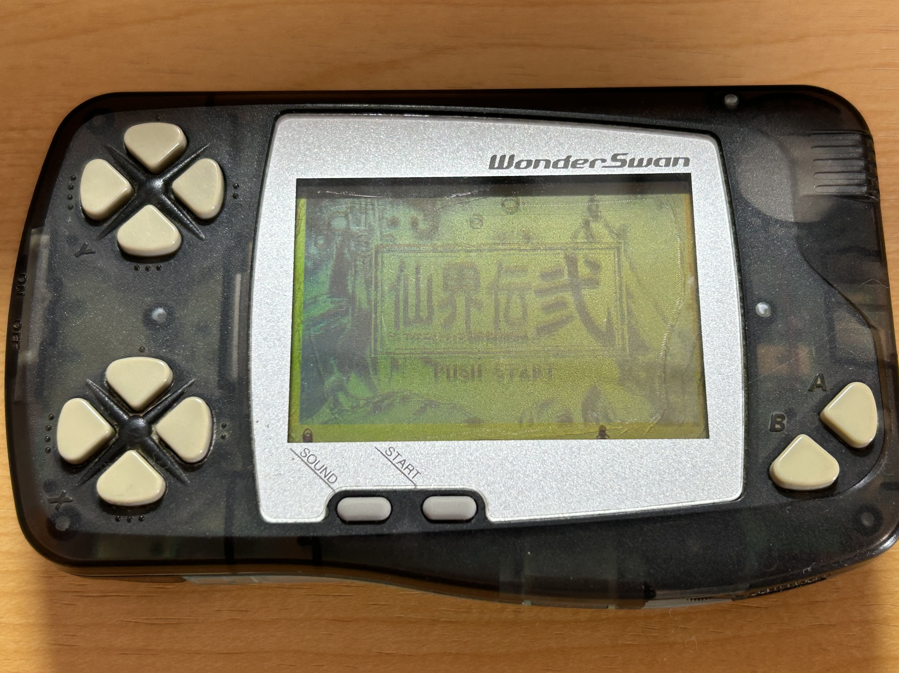
今回使用した偏光板と道具
今回使用した偏光板は、「粘着型直線偏光フィルター」と書かれたタイプで、大きさは 7.9×15.1cm のものです。
近くのホームセンターを探したものの取り扱いがなかったため、オンラインショップで注文しました。
それ以外に準備したものは、
ドライバーセット / 無水エタノール / 綿棒 / カッター / ピンセット
などです。
本来、ワンダースワン本体のネジは「トルクスネジ」と呼ばれる特殊ネジが使われているのですが、 手持ちのワンダースワンはなぜかトルクスネジとプラスネジが混ざっていました。
幸い、通信プレイ用にワンダースワン本体を2台持っていたので、 作業後の組み立て時にもう1台のほうからネジを拝借し、トルクスネジに揃えておきました。
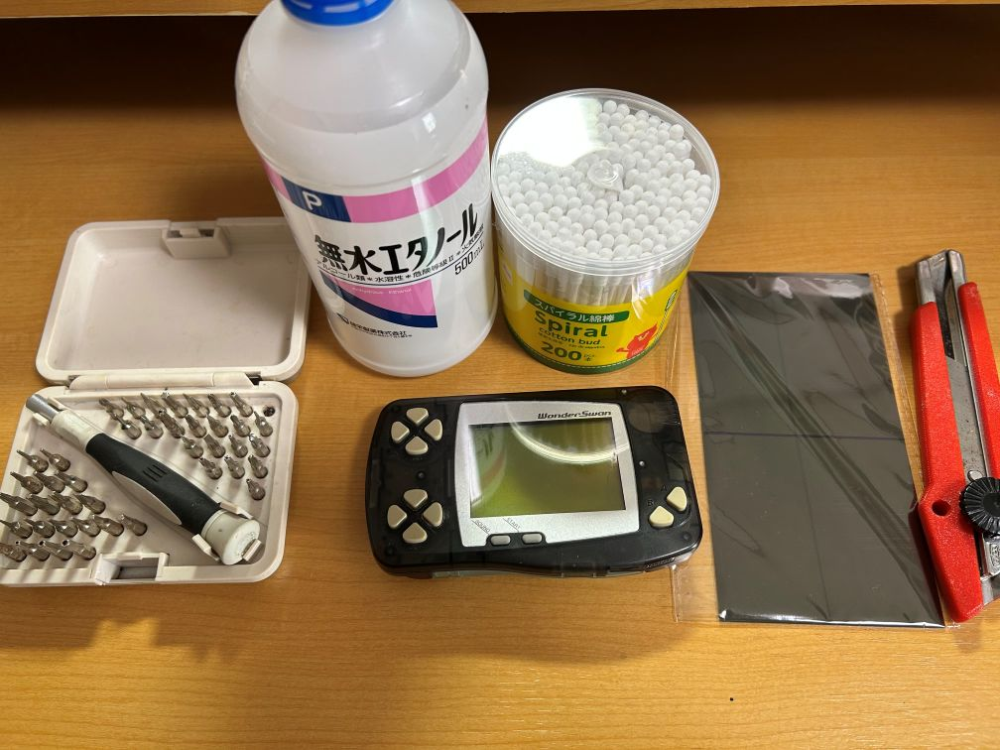
本体分解と基板の取り外し
ここからは実際の作業手順です。
まず、本体裏面にある6本のネジを外し、外装を開けて基板の状態を確認します。
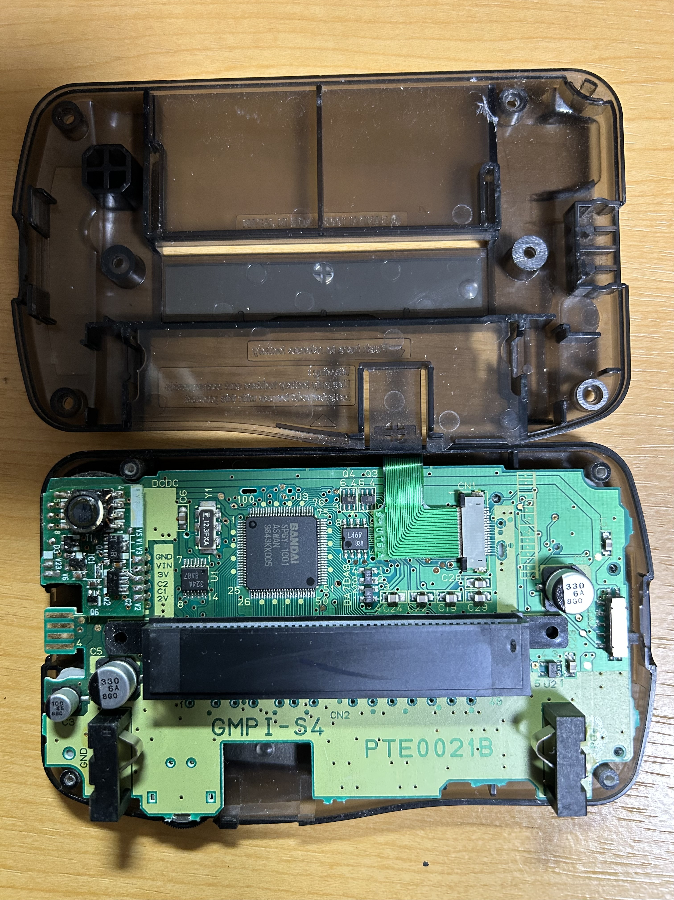
基板上側には、緑色の「フレキシブルケーブル」が接続されています。
このケーブルは両端にある小さい黒いパーツを左側にスライドさせることでロックが外れ、抜き取ることができます。
フレキシブルケーブルさえ外してしまえば、基板とつながっているものはなくなるので、 基板自体の取り外しはそれほど難しくありません。
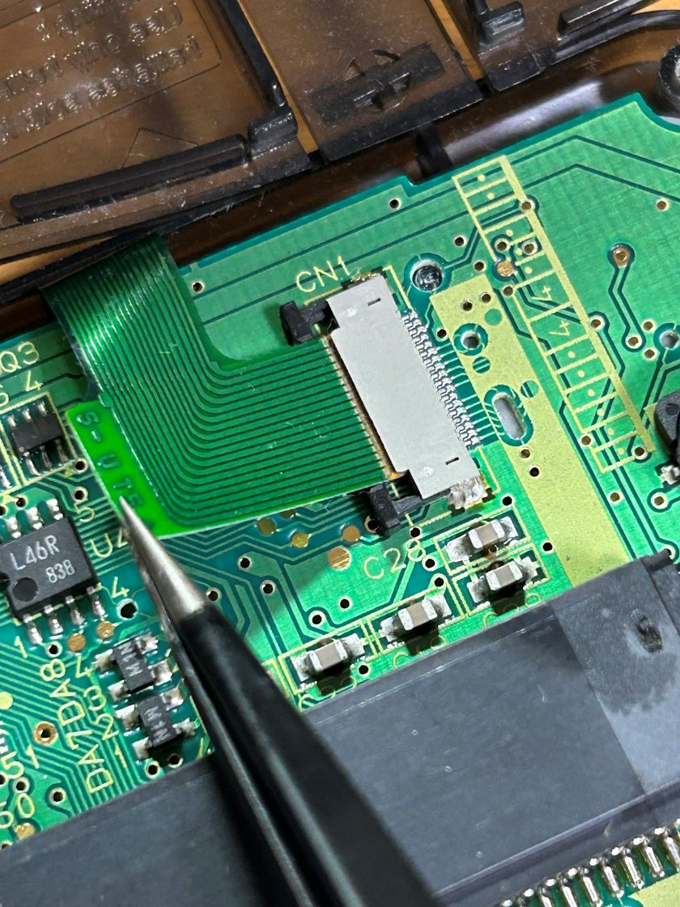
液晶ユニットの取り外し
基板を外したら、フロントカバーと液晶部分の作業に移ります。
まず、ボタン類のパーツをすべて取り外し、紛失しないようにまとめて保管しておきます。
その後、液晶とフロントカバーが貼り付いているので、 フロントカバーを少しねじるようにして液晶を浮かせるイメージで取り外していきます。
このとき「パキパキッ」といった音がしましたが、幸い割れたりはしていませんでした。
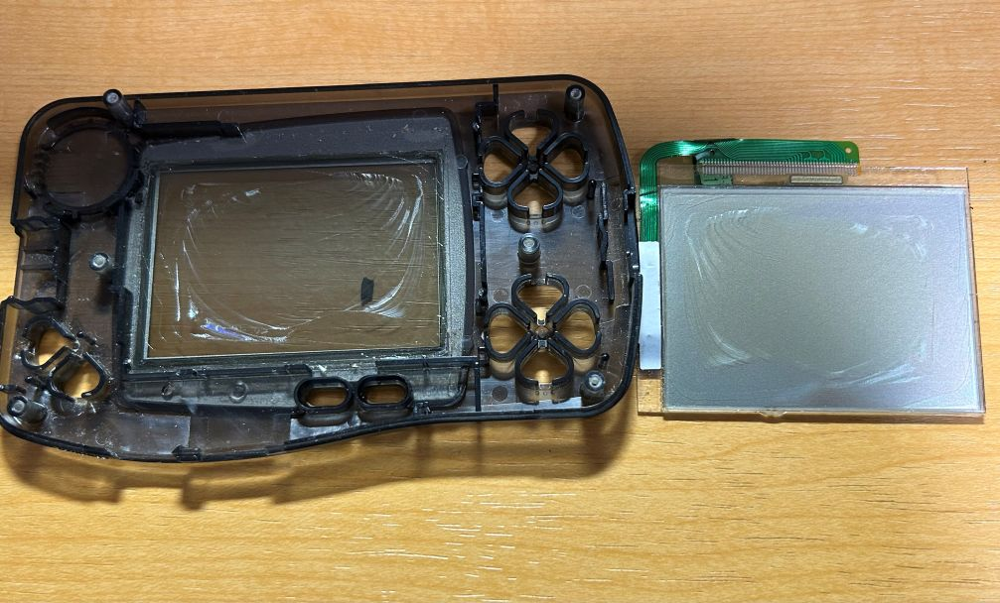
液晶側の古い偏光板を剥がす
液晶の銀色の面には偏光板が貼られており、 今回問題になっているビネガーシンドロームは、この偏光板側で起きているものと思われます。
そこで、液晶の端からカッターの刃先を軽く差し込んで、 少しずつ偏光板をはがしていきます。
このとき液晶自体に傷がついてしまわないように、 無理に一度に剥がそうとせず、慎重に時間をかけて作業しました。
後で無水エタノールと綿棒で粘着剤を落とすため、 この段階では「剥がしやすい部分だけを優先して取っていき、無理そうな部分で無理をしない」ことを意識しています。
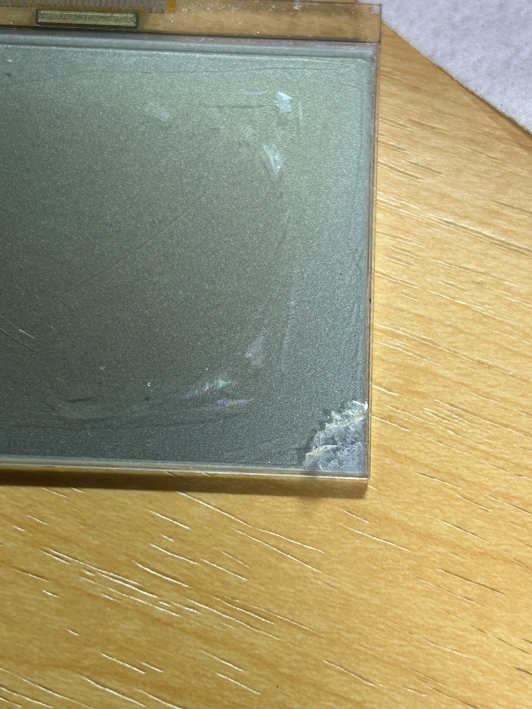
大まかに偏光板を剥がせたら、液晶面に残った粘着剤や取り切れなかった偏光板の残りを、 無水エタノール＋綿棒を使ってきれいにしていきます。
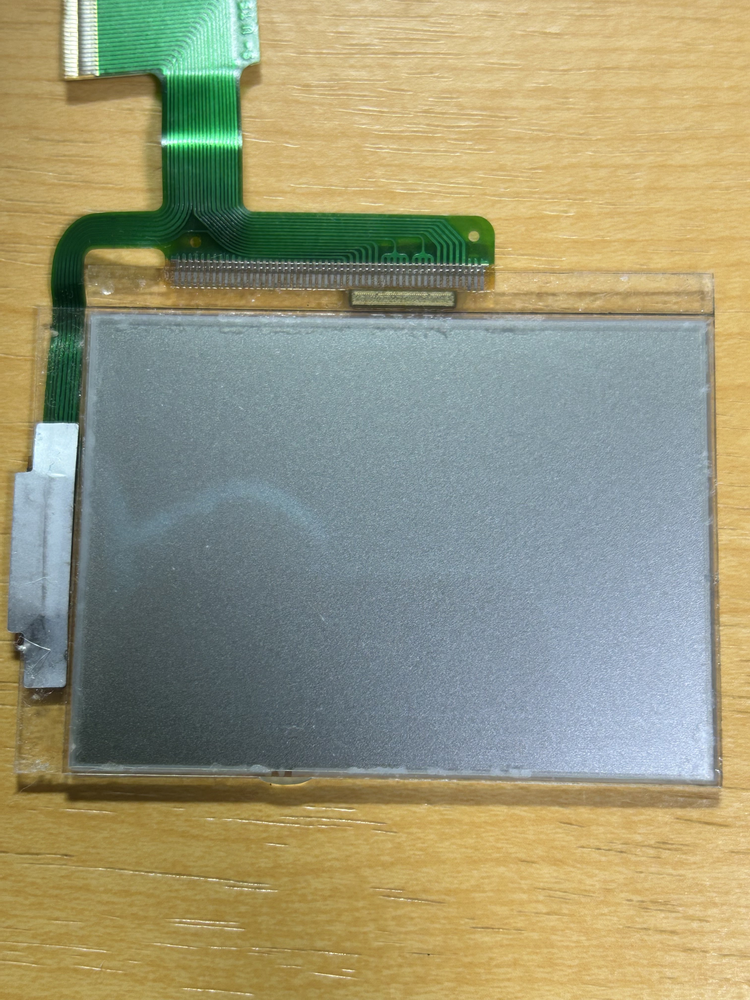
新しい偏光板の向きを探す
次に新しい偏光板の準備です。
偏光板は「貼る向き」によって画面の見え方が大きく変わるため、
自分にとって一番見やすい向きを探していきます。
フロントカバー以外を仮組みした状態で電源を入れ、 液晶の上に新しい偏光板をかざしながら、向きを少しずつ変えて見え方を確認しました。
一番見やすい向きが決まったら、液晶の大きさに合わせてカッターで偏光板を切り出していきます。
個人的には少し斜めの向きにしたときが一番見やすく感じました。
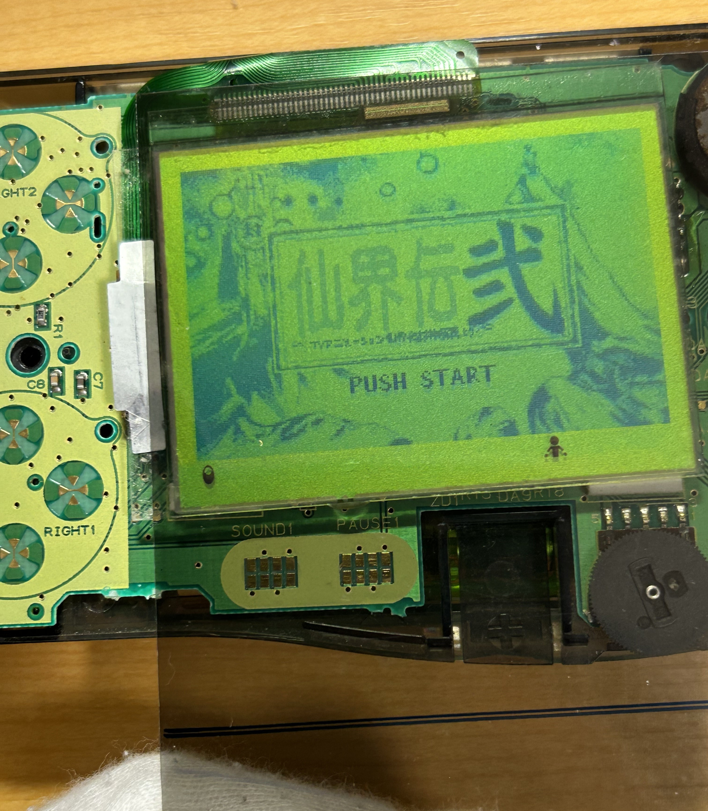
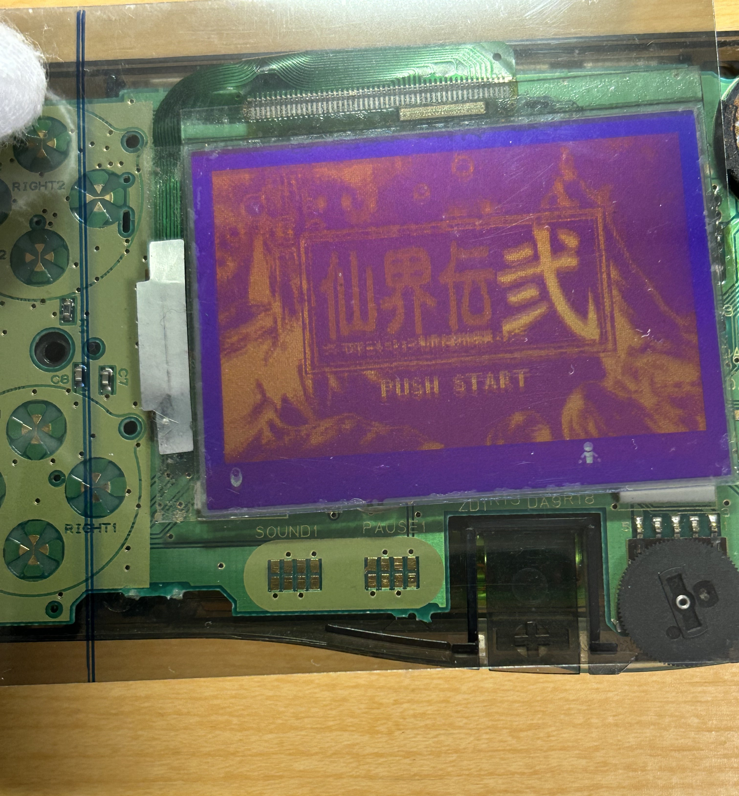
フロントカバー側の偏光板について
次はフロントカバー側の確認です。
最初は気づいていなかったのですが、どうやらフロントカバー側にも偏光板が使われていたようです。
液晶を外す際にカバーをねじった影響か白い線のようなものが見えており、 そもそもこちらも劣化している可能性が高く交換する必要があると判断しました。
そのためフロントカバー側に残っていた偏光板も剥がし、 こちらも無水エタノール＋綿棒でフロントパネル部分をきれいに掃除しておきます。
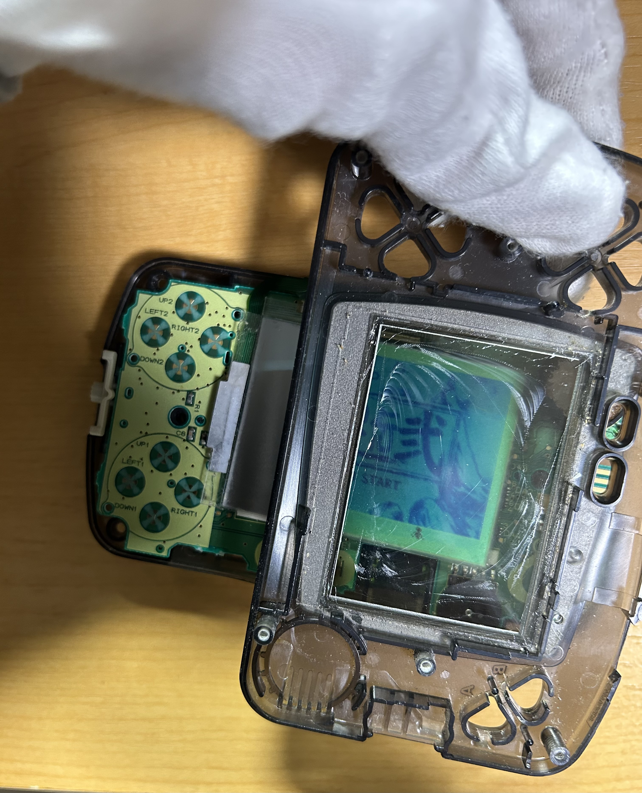
偏光板は1枚構成で運用することに
フロントカバーにも偏光板が使われているのであれば、 「偏光板2枚重ね」で調整したほうが良いのでは？ と考え、 液晶側とフロントカバー側の両方に偏光板を配置して、いろいろな角度を試してみました。
しかし、自分の環境では「1枚だけ貼った状態」のほうが見えやすいと感じたため、 最終的には液晶側にのみ偏光板を1枚貼り、フロントカバー側は偏光板なしで組み立てることにしました。
もしかすると、2枚のほうがより見やすい最適な角度もあったのかもしれませんが、 見つけられなかったことと、今回は自分で使う本体ということもあり、 自分の見やすさを優先した形です。
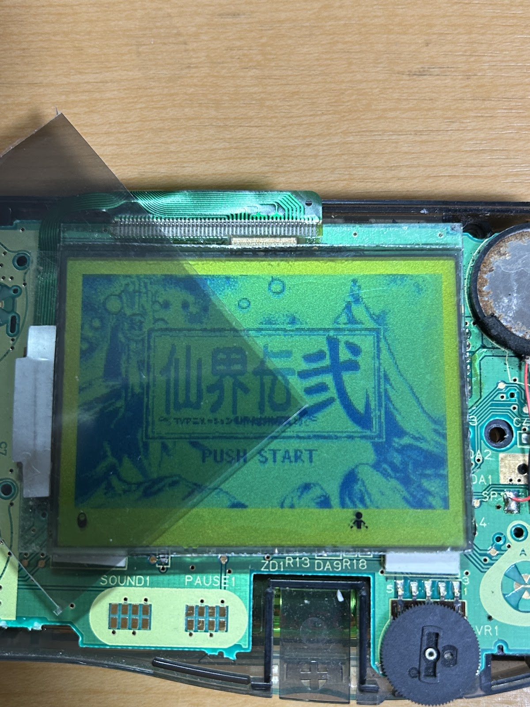
偏光板貼り付けと再組み立て
偏光板の位置と向きが決まったら、液晶に新しい偏光板を貼り付けます。
貼り終えたら、今度はフロントカバーに液晶をセットし直します。
このとき、液晶とフロントパネルの間にホコリなどが入らないように注意が必要です。
一度組み上げたあとでホコリに気づいて、分解し直すことになってしまいました……。
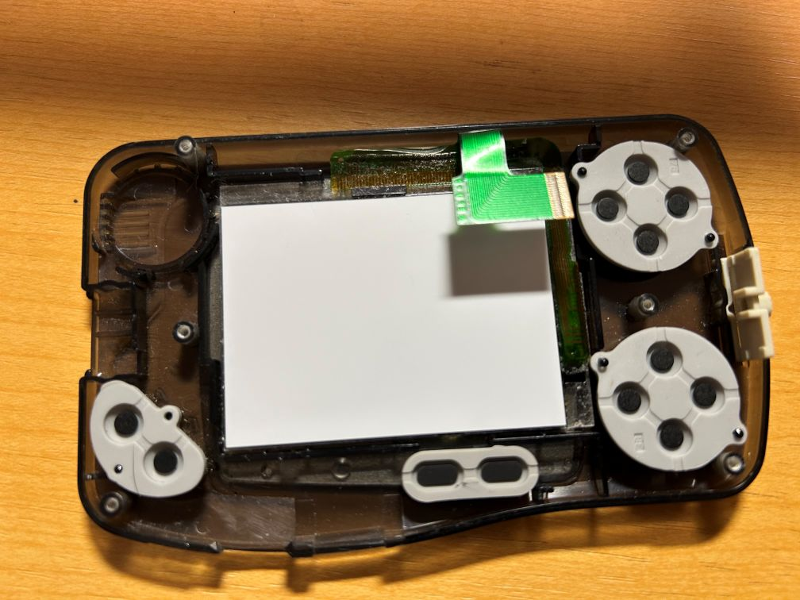
あとは、液晶から出ているフレキシブルケーブルを基板に再接続し、 基板と外装を元通りに組み上げれば作業完了です。
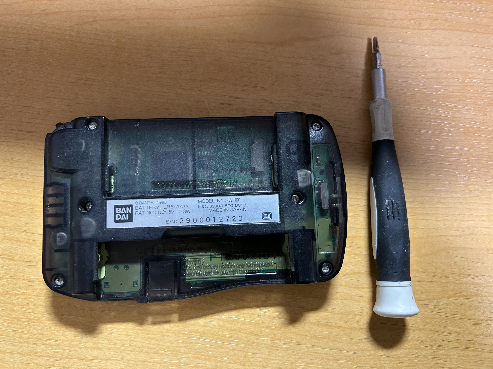
起動確認とおわりに
最後に起動確認を行い、画面がきちんと表示されるかどうかをチェックしました。
問題なくタイトル画面が表示されたので、偏光板交換は無事成功です。
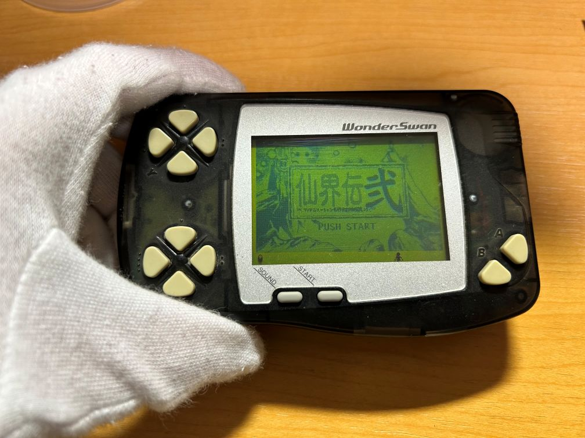
今回初めて、ビネガーシンドロームを起こしているワンダースワンの分解・修理に挑戦してみましたが、 時間こそかかったものの、「思っていたよりはずっと手が出しやすい作業だった」という印象でした。
ワンダースワンでまだ遊びたいソフトもいくつかあったので、 数年前から「いつか偏光板を交換したい」と思っていたのですが、 今回こうして実際にやってみてよかったと思います。
IPS液晶化も少し考えましたが、もしやるならワンダースワンカラー本体のほうでやるかな、という感じです。
無印ワンダースワンだとカラー専用ソフトが遊べないこともあって、
コスト面とのバランスを考え、今回は偏光板の交換だけに留めました。
とはいえ、今回の交換で「ちゃんと遊べる画面」に戻ってくれたので個人的には十分満足です。
こういった修理を一度経験しておくと、 また同じような症状が出たときにも「自分で直せるかも」と思えるようになるのが大きいですね。
特にレトロゲームの場合は新品が手に入らないものも多いので、 状態の良いものを買い直すだけでなく、 今あるものを自分の手でできるだけ良い状態に戻してあげる という考え方も大事なのかなと思いました。
それでは今回はこのあたりで。閲覧ありがとうございました。
【掲載しているゲーム画面について】
本記事では、修理後の起動確認として『仙界伝弐 ～TVアニメーション仙界伝封神演義より～』の画面を一部掲載しています。
ゲーム画面・作品名・各種権利は、各権利者に帰属します。
©安能務・藤崎竜／集英社・テレビ東京・封神プロジェクト 1999
©BANDAI 2000
最終更新日：2026/05/26